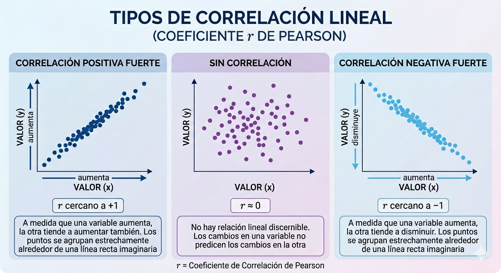
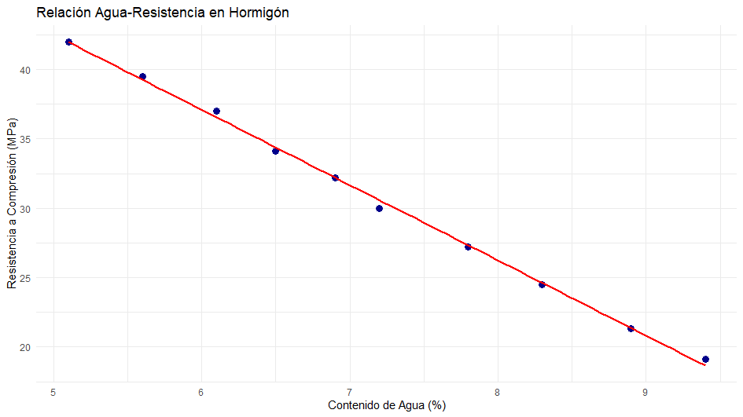

4 Regresión y correlación
4.1 Concepto de regresión
Dada una distribución bidimensional, uno de los objetivos que se pueden plantear es el de encontrar una función que se ajuste lo mejor posible a las observaciones; gráficamente esto equivale a encontrar una curva que aunque no pase por todos los puntos del diagrama de dispersión esté lo más próxima posible de dichos puntos. Un segundo objetivo será medir el grado de ajuste entre la función teórica y la nube de puntos.
Regresión: Consideramos \(n\) observaciones que son pares de valores del tipo \(\left(x_i,y_j\right)\). Sea \(X\) la variable independiente e \(Y\) la variable dependiente. El objetivo es encontrar una expresión de \(Y\) como función de \(X\). En este caso se dice que se está realizando una regresión de \(Y\) sobre \(X\).
La función de regresión, \(y = f\left(x\right)\), puede adoptar distintas formas: línea recta, parábola, polinomio de grado \(p\), función exponencial, etc. Todas las posibles funciones de ese tipo tendrán una formulación general que dependerá de unos parámetros y la determinación de dichos parámetros se hará de modo que los valores observados estén próximos a los puntos de la función de regresión. El modo usual de proceder es prefijar el tipo de función que se va a considerar.
De modo general, consideramos como variable independiente a \(X\) y como variable dependiente a \(Y\). Si hemos observado un punto \(x_i\), llamamos \(y_j^*\) al valor previsto por la función de regresión, es decir, \(y_j^* = f(x_i)\). Se denomina error o residuo y se denota por \(e_{ij}\) a la diferencia entre el valor observado y el valor previsto, es decir: \[e_{ij} = y_j - y_j^*.\] Lógicamente se desea que los residuos o errores sean lo más pequeños posible. El método que más se utiliza para obtener los parámetros es el de ajuste por mínimos cuadrados, que consiste en obtener el valor de los parámetros que hagan mínima la suma de los residuos al cuadrado.
4.2 Covarianza
La covarianza es una medida de la variabilidad conjunta de las variables \(X\) e \(Y\). Se denota como \(\sigma_{xy}\) y cuya expresión viene dada por \[\sigma_{xy} = \frac{1}{n} \sum_{i=1}^k \sum_{j=1}^p n_{ij} \left(x_i - \bar{x}\right)\left(y_j - \bar{y}\right) = \frac{1}{n} \sum_{i=1}^k \sum_{j=1}^p n_{ij}x_i y_j - \bar{x}\bar{y}\]
El signo de la covarianza indica el sentido en el que varían conjuntamente las dos variables:
Si \(\sigma_{xy}>0\), entonces las variables varían en el mismo sentido.
Si \(\sigma_{xy}<0\), entonces las variables varían en sentidos opuestos.
4.3 Coeficiente de correlación lineal
Antes de predecir usando la recta de regresión, se comprueba si existe una relación lineal y qué tan fuerte es. Para ello, se define el coeficiente de correlación lineal de Pearson, y se denota como \(r\) a \[r = \frac{\sigma_{XY}}{\sigma_X \sigma_Y};\quad -1\leq r \leq 1,\] que mide el grado de relación lineal entre las variables.
Si \(r=0\), no existe relación lineal entre las variables.
Si \(r\) está próximo a 1 o a -1, entonces existe buena relación entre las variables y esa relación es directa o inversa, respectivamente.

4.4 Recta de regresión mínimo-cuadrática
Estudiamos el caso más sencillo y de mayor importancia, que es aquel en que la función de regresión es una línea recta.
Recta de regresión de \(Y\) sobre \(X\)
La expresión general de una línea recta será del tipo \[Y = \beta_0 + \beta_1X + \epsilon,\] siendo:
\(\beta_0\) (Término constante): El valor de \(Y\) cuando \(X\) es cero.
\(\beta_1\) (Pendiente): Cuánto cambia \(Y\) por cada unidad que aumenta \(X\).
\(\epsilon\) (Error o residuo): La diferencia entre el dato real y lo que predice la línea.
La solución que se obtienee para los parámetros por el método de mínimos cuadrados es la siguiente:
\[\begin{eqnarray} \nonumber \beta_0 = & \bar{Y} - \beta_1\bar{X}\\\nonumber \beta_1 = & \frac{\sigma_{XY}}{\sigma_X^2} \end{eqnarray}\]
Una de las aplicaciones de la recta de regresión de \(Y\) sobre \(X\) es predecir el valor que tendrá la variable \(Y\) conocido un valor de \(X\), diferente a los utilizados para construir la recta de regresión.
4.5 Coeficiente de determinación y varianza residual
Se denota por \(R^2\), y se calcula como \[R^2 = \frac{\sigma_{Y^*}^2}{\sigma_Y^2} = 1 - \frac{\frac{1}{n} \sum_{i=1}^k\sum_{j=1}^p n_{ij} \left(Y_j - Y_j^*\right)^2}{\sigma_Y^2}\] El numerador es la varianza de los valores calculados para cada \(x_i\) mediante la función de regresión y el denominador es la varianza de los valores observados para \(Y\). Se demuestra que \(R^2\) solo puede tomar valores en el intervalo \([0,1]\). Este coeficiente representa la proporción de la varianza de \(Y\) (variabilidad de la variable) que es explicada por la regresión.
Si \(R^2 = 1\), indica que existe una dependencia funcional exacta; todos los puntos observados están sobre la función de regresión obtenida. En este caso, todos los residuos son nulos y el ajuste es perfecto. Y si \(R^2\) está próximo a \(1\) se puede afirmar que el modelo explica la relación de dependencia entre las variables.
Si \(R^2 = 0\), entonces el modelo de regresión considerado no explica nada la variabilidad de la variable dependiente. Es el peor caso que se puede encontrar. Y si \(R^2\) está próximo a 0 no se puede afirmar que el modelo explique la relación de dependencia entre las variables.
Todo lo anterior es válido para el caso de una función de regresión cualquiera, sin importar la forma que adopte.
En el caso particular de la recta de regresión se demuestra que: \[R^2 = r^2.\]
Por lo tanto, el coeficiente de correlación lineal al cuadrado, \(r^2\), se utiliza como medida de la bondad del ajuste de la recta de mínimos cuadrados.
4.6 Ejemplo: Campo de la ingeniería de materiales.
Queremos estudiar cómo afecta el contenido de agua en una mezcla de hormigón (medido como porcentaje del peso total) a su resistencia a la compresión final (medida en Megapascales, MPa) a los 28 días.
Hipótesis inicial: En general, a más agua en la mezcla, menos resistente es el hormigón (correlación negativa), porque el exceso de agua crea poros al evaporarse.
Se han tomado 10 muestras de laboratorio con diferentes contenidos de agua y se ha medido su resistencia:
| Contenido de Agua (X, %) | Resistencia a Compresión (Y, MPa) |
|---|---|
| 5.1 | 42.0 |
| 5.6 | 39.5 |
| 6.1 | 37.0 |
| 6.5 | 34.1 |
| 6.9 | 32.2 |
| 7.2 | 30.0 |
| 7.8 | 27.2 |
| 8.3 | 24.5 |
| 8.9 | 21.3 |
| 9.4 | 19.1 |
El coeficiente de correlación \(r = -0.999\), es una correlación negativa casi perfecta. Las variables tienen una fuerte correlación lineal negativa.
La recta de regresión que se obtiene con estos datos es la siguiente: \[ resistencia = 69.66-5.42*agua\]
Interpretación de los coeficientes:
\(\beta_0 = 69.66\): Teóricamente, si no hubiera agua (0%), la resistencia sería de 63.36 MPa (un valor no realista, pero necesario para la línea).
\(\beta_1 = -5.42\): Por cada 1% más de agua, la resistencia baja 5.34 MPa.
Si se calcula el coeficiente de determinación, se obtiene un valor \(R^2 = 0.998\), es decir, el 99.8% de los cambios en la resistencia se explican únicamente por el contenido de agua. El modelo se ajusta muy bien a los datos, tal como se puede ver en la imagen.
